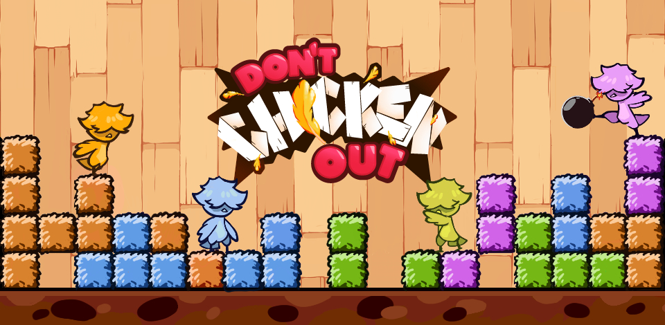
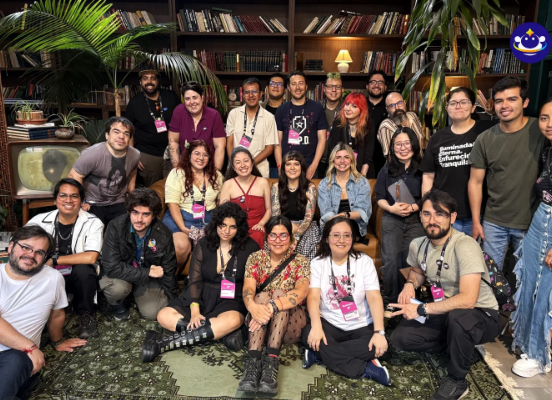
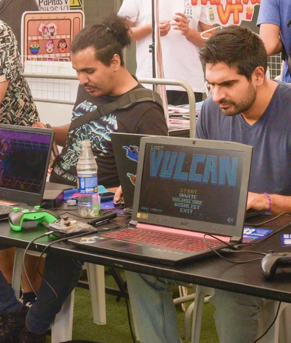
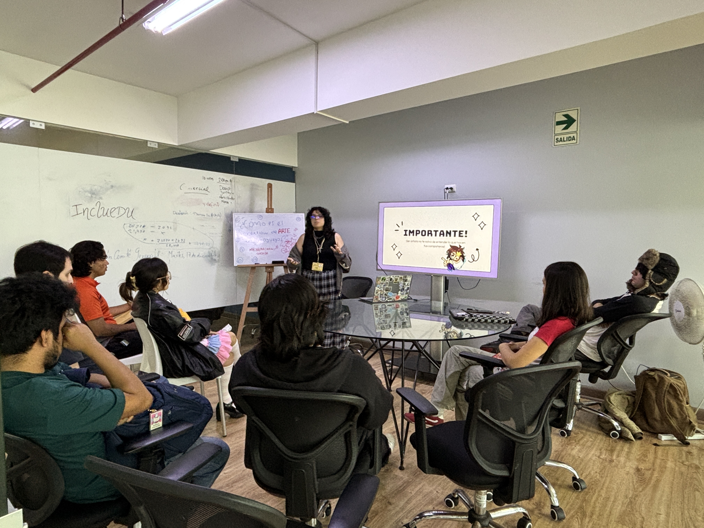
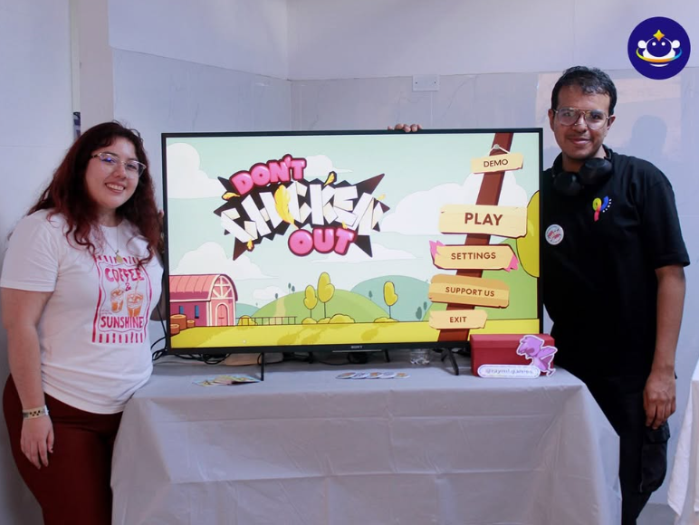

GAME DIRECTION + UX

Don't Chicken Out!
A competitive local multiplayer party game for 2–4 players. Chickens build and balance on a rising tower of falling blocks; the goal is to be the last one standing.
I design experiences, make games, and build communities where creative people can find their place.

A little bit of everything I love making.

A competitive local multiplayer party game for 2–4 players. Chickens build and balance on a rising tower of falling blocks; the goal is to be the last one standing.

A dice-based roguelite where a Maneki-neko and a Xuan Mao black cat take risks to get closest to a target number.

Redesigning an educational platform and its course discovery experience.

I'm Liliana, a multidisciplinary creative from Peru. My favorite projects sit somewhere between thoughtful design, playful ideas, and bringing people together.
Outside my day-to-day work, I love creating gaming content, sharing little lifestyle moments, and helping new developers discover opportunities in the industry.
Creating room for people to learn, connect, and feel like they belong is one of my favorite things.
I founded SANDA in 2024 to support emerging game developers in Latin America through accessible spaces, community and opportunities.
From game jams in Peru to speaker panels at Gamescom LATAM, I love helping our region's game industry grow through collaboration.



My very important feline coworker. She supervises everything (mostly naps).
Have a project, a collaboration idea, or just want to say hi? My inbox is open.
relibrana@outlook.comA competitive local multiplayer party game for 2–4 players. Chickens build and balance on a rising tower of falling blocks; the goal is to be the last one standing.
Play on itch.ioAs Game Director and UX Designer, I guide the creative vision, facilitate alignment across the team and shape how players understand and move through the game. Game-design decisions are collaborative, with the technical and design leads contributing most deeply in their areas.
The project is a playable prototype in development for a public demo. The long-term goal is PC and consoles; online play is planned for the future.
The team has presented Don't Chicken Out! in person, explaining the game, watching people play and listening to feedback. The timeline below records the public showcase journey so far.



Game Director & UX Designer
Game Designer
Gameplay Programmer
Music & Sound Effects
2D Artist & Social Media Graphic Designer

Don't Chicken Out! is teaching me how to guide a shared creative direction without treating every decision as mine alone. I am learning to frame decisions clearly, coordinate art, audio, programming and design, and know when the team’s specialist knowledge should lead. Showcases make that practice concrete: observing real players turns uncertainty into actionable questions for the next iteration.
A dice-based roguelite where a Maneki-neko and a Xuan Mao black cat take risks to get closest to a target number. I focused on making the rules, choices and consequences easier to understand.
Each cat starts with seven lives. Across rounds, players use three dice, consider a hidden opponent result and decide how close to get to the target. Getting above the target is not automatically a loss: outcomes depend on comparative distance and can put lives at risk.
I compared eight dice and roguelite references through mechanics, UX and game-feel lenses. The full set of sources, heuristic findings and the HUD application are available below.
 Dice A MillionReference scan
Dice A MillionReference scan
 BalatroFocus: progression, risk/reward, feedback and game feel
BalatroFocus: progression, risk/reward, feedback and game feel
 RollFocus: visual hierarchy, interaction rhythm and consistency
RollFocus: visual hierarchy, interaction rhythm and consistency
 Dicey DungeonsFocus: readable dice interactions, states and learning curve
Dicey DungeonsFocus: readable dice interactions, states and learning curve
 Slice & DiceFocus: dice systems, consequences and risk management
Slice & DiceFocus: dice systems, consequences and risk management
 Dice With DeathReference scan
Dice With DeathReference scan
 Circadian DiceReference scan
Circadian DiceReference scan
 Die in the DungeonFocus: dice positioning and anticipating consequences
Die in the DungeonFocus: dice positioning and anticipating consequences
The following synthesis records the strongest results from the heuristic comparison and how each finding informed Lucky Cat.
Its dice systems, rerolls, combat, bonuses and progression work as an interdependent whole: every choice affects later turns while still giving players tools to manage chance.
For Lucky Cat: three dice form a hand and one is used each round. Before deciding, the player should be able to anticipate possible consequences and the likely range of totals.
Its progression, risk/reward and connected mechanics support strategies, although modifiers and combinations can make exact outcomes harder to predict.
For Lucky Cat: the reference supports a hand that evolves across seven rounds. Upgrade choices should state both their benefit and their possible downside relative to the target.
Dice positioning and special effects turn the board into a strategic space, helping players plan despite uncertainty.
For Lucky Cat: special dice need to show what they do, how they change the result and what consequence they can trigger—especially positive and negative doubles.
Its major strength is interaction clarity: players can recognize usable objects and understand their conditions without depending only on external instructions. Visual hierarchy and feedback also help learning.
For Lucky Cat: it is especially useful for designing understandable dice interactions.
Its visual hierarchy, feedback and interaction rhythm let players move quickly between decisions, results and rewards. A limitation is that some combinations require knowledge that newcomers may not yet have.
For Lucky Cat: the result screen must clearly explain how the final total was made and why someone lost lives.
Its hierarchy and interaction consistency keep decorative elements from competing with the main actions.
For Lucky Cat: the cat, amulets and bets can enrich the theme, but never make dice values harder to read.
Animations, visual effects and sound give each card and joker a sense of impact as scores transform. Stronger combinations feel more powerful, and the satisfaction comes from how choices and resources are combined—not only from receiving cards.
For Lucky Cat: feedback should make the result of each die, reroll and card understandable while reinforcing the sensation of progression and player control.
The round goal and interactive buttons are easy to identify, and the interface communicates progression and results.
For Lucky Cat: organize information into three recognizable zones—black cat, table with dice and target, and player information.
Its HUD, values and interactions are well organized, with visual signals that clarify where dice go and which conditions activate effects.
For Lucky Cat: organize the main game screen and clearly communicate the actions available during each phase of a round.
The goal is not an extra feature: it is the practical UI outcome of the benchmark. The screen is organized into three recognizable zones so people can identify the opponent, understand the decision space and check their own risk before acting.
The game design changed several times because the rules and core loop were not immediately understood. We built many quick prototypes to simplify the experience. I created the user flow and wireframes, and used ChatGPT for rapid interactive prototypes to check comprehension—not as a replacement for UX work. The wireframes were implemented in the playable prototype.
UX Designer
Game Design
Programmer
2D Artist
Music & SFX
Lucky Cat taught me to treat rules, interface and feedback as one system. The benchmark made it clear that a strategic game can still feel approachable when players see the goal, understand their available actions and can anticipate what a result means. I learned to test the loop early, reduce cognitive load before adding visual complexity, and document decisions through flows and wireframes so the whole team can iterate from the same understanding.